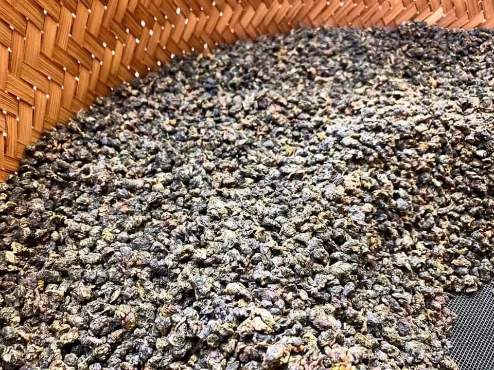
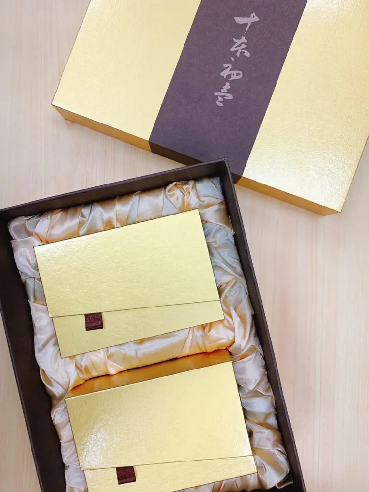
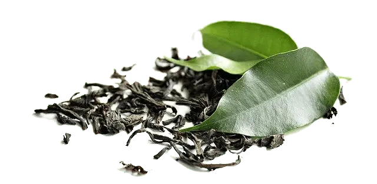

Articles / Tips & trends
Introducing our Taiwanese tea gift set!
2020-07-09 · New products, News

Original public content from Yen Chuan. Product claims and specifications remain subject to confirmation by the company.
Tea is the heart and soul of bubble tea, and is richly steeped in history and culture.
Asians have been happily sipping green, black, oolong and white tea for centuries, and the British are famous for their obsession with black tea. Many people swear by their favourite blends, and high quality tea are a sign of taste and status.
When we talk about tea origins, we usually think of places like India, Siri Lanka, China and Japan. What about Taiwan?
It’s not just about bubble tea – Many locals and other countries enjoy Taiwanese tea brews!
What’s great about Taiwanese tea?
Despite being less well-known in the West, Taiwan-grown tea leaves have been renowned for its high quality and unique flavour. Blessed with the perfect climate and rich soil, the sprawling mountains of Taiwan are the best place for growing tea anyone could ask for.
Take a walk in the mountains of Taiwan, breath in the fresh, grassy air and enjoy the view with a cup of tea!
It’s not just about the area however, how it is processed can make or break a tea blend. Luckily the Taiwanese have mastered tea-making, with a level of focus, passion and attention to detail rivaling the Japanese.
Take the roasted Oolong tea as an example. After the Oolong tea leaves are processed, they are handed to a master for roasting. The master slowly roasts the tea leaves over a fire, carefully controlling the flames underneath.
Under the watchful eye of the master, the tea leaves are roasted to perfection, gaining a rich, smoky aroma and a smoother palate.


How can I try some?
Want to have a taste of Taiwanese tea leaves? Our premium tea gift set is for you!
Hand-picked from a selection of premium tea leaves, we present the best brews Taiwan has to offer, neatly packaged in an elegant box set. Perfect for gifting your family and friends with a taste of Taiwan!
Want to give the box set an unique flair? We can offer custom printing for the packaging, such as printing your own logos.
Sit back, and enjoy a cup of Taiwan’s excellent brews!
A Gift from Taiwan!
Contact us to learn more about different types of Taiwanese tea, and details about our gift sets!
